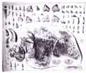
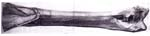

THE VERTEBRATE-BEARING MEUDON CHALK (CAMPANIAN) AND MEUDON CONGLOMERATE (SPARNACIAN) AT MEUDON (HAUTS-DE-SEINE)
Visit of the underground quarries at 15, route des Gardes, Meudon, led by Mr Alain
GALOYER (Meudon)
Introduction
The city of Meudon. in the south-western suburbs of Paris, has been well known among French palaeontologists since the 19 century for two vertebrate-bearing geological formations, the Campanian Meudon Chalk and the Spamacian Meudon Conglomerate. The field trip will provide an opportunity to examine both formations in underground quarries which normally are not accessible to the public.
The Meudon Chalk
The Meudon Chalk was exploited since at least the 18th century for the production of "Blanc de Meudon" ("Meudon White"), a substance that was obtained by mixing crushed chalk with water. The resulting paste was moulded into small blocks, and used as a paint basis as well as a mild abrasive for polishing silverware etc. At Meudon and neighbouring places, the Late Cretaceous Chalk was quarried in an extensive network of underground galleries dug into the hillsides on the southern bank of the Seme. The excursion will visit some of the galleries, which still display evidence of the techniques used for quarrying the chalk and producing the "Blanc de Meudon", and of the everyday life of the quarrymen (graffiti, chapels, etc.). 
The Meudon Chalk is a very pure white chalk, with layers of black flints. During the visit, various aspects of the mineralogy, sedimentology (paramoudra-type flints, etc.), tectonics (faults linked to the Meudon anticline) and hydrogeology (karstic network with dissolution features, stalactites) of the Chalk will be examined.
The Meudon Chalk is late Campanian in age. It contains abundant invertebrate fossils, including sponges, annelids, echinids, brachiopods, bryozoans, bivalves, belemnites and ammonites. The vertebrate remains identified by Hebert (1855) include fish (Pycnodus parallelus, Coraxpristodontus. Sphryna plana, Otodus appendiculatus. Lamna subulata. Onchosaurus radicalis) and reptiles (crocodilians, Mosasaurus camperi, Leiodon anceps).
Reports of an Iguanodon-like dinosaur have never been substantiated. The vertebrate fauna from the Meudon Chalk is much in need of revision. Various invertebrate fossils, as well as fish remains, will be visible during the visit.
Reference:
Hubert, E. 1855. Tableau des fossiles de la craie de Meudon et description de quelques especes nouvelles. Mem. Soc. geol. France, 2, pp. 345-374.
The Meudon Conglomerate
The Meudon Conglomerate is interpreted as the filling of a fluvial channel carved in an underlying Palaeocene limestone. It is basal Eocene in age. In the nineteenth century, the Meudon Conglomerate (and the immediately overlying sandy clay rich in lignite) became famous for the abundant vertebrate remains they contained. In 1855, the young physicist Gaston Plante discovered remains of a giant flightless bird at Meudon; it was named Gastornis parisiensis by Hebert, and attracted much attention. At the end of the 19th century, the Meudon Conglomerate became inaccessible, and remained so for about a century. In 1984, it was rediscovered by Mr Alain Galoyer in a slump ("fontis") in one of the underground chalk quarries at Meudon, and later in a temporary outcrop on a building site. Screenwashing under the scientific supervision of Donald Russell (CNRS - Natural History Museum, Paris), followed by Marc Godinot (EPHE - Museum), led to the discovery of a number of vertebrate remains, including mammal teeth, which have significantly improved our knowledge of the fauna from the Meudon Congomerate. The mammal assemblage from Meudon characterises reference level MP7 (Schmidt-Kittler, 1987) and zone PE II (Hooker, 1996). 
The vertebrate fauna from the Meudon conglomerate includes fishes (Selachii indet, Pristidae, Batoidea indet., Pycnodontidae, Lepisosteidae, Amiidae, Percoidei indet., Phyllodontidae), amphibians (Urodela indet., Anura indet.), turtles (Trionychidae, Carettochelyidae), lizards (Agamidae, Anguidae), crocodilians (Crocodylidae, Alligatoridae), birds (Aves indet., Gastornithidae), and mammals (Didelphidae, Ischyromyidae, Erinaceidae, Nyctitheriidae, Apatemyidae, Icaronycterididae, Microsyopidae, Paromomyidae, Plesiadapidae, Omomyidae, Adapidae, Equidae, Miacidae, Viverravidae, Oxyaenidae, Hyopsodontidae, Coryphodontidae).
The Meudon Conglomerate is still exploited for palaeontological purposes by Alain Galoyer in the underground quarry visited by the field trip, in a timbered narrow gallery which will be seen during the visit. Samples pf conglomerate and lignite will be available for examination.
References:
Aubry, M.P., Thiry, M., Dupuis, C. & Berggren, W.A. 2005. The Sparnacian deposits of the Paris Basin: A lithostratigraphic classification. Stratigraphy, 2,65-100.
Buffetaut, E. 1997. L'oiseau geant Gastornis : interpretation, reconstitution et vulgarisation de fossiles inhabituels dans la France du XIXe siecle. Bull.Soc.geol.France, 168,6 : 805-811.
Russell, D.E., Thiry, M. & Galoyer, A. 1989. Le Conglomerat de Meudon - hier et aujourd'hui. Actes du 114eCongres National des Societes savantes (Paris 1989), Section des Sciences, Geologie du Bassin Parisien, 305-327.
Thanks to Mr A. Galoyer, Mr S. Brisson and the owner of the property at 15 route des Gardes for the opportunity to visit the underground quarries.